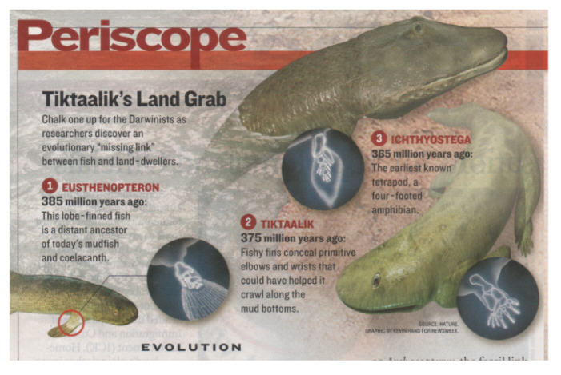
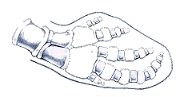
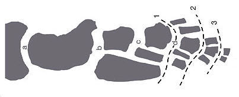

| Evolution in the News - May 2006 |
| by Do-While Jones |
Tiktaalik is the latest claimed missing link.
The April 7, 2006, issue of Nature describes a fossil that is claimed to be the long-sought-for missing link between fishes and land-dwelling creatures. Before commenting on the discovery itself, let's comment on the coverage it received.
One of our British readers sent us the link to an article in The Guardian (a British daily newspaper). The headline quickly grabbed our attention.
|
Discovered: the missing link that solves a mystery of evolution 1 |
On the one hand, evolutionists keep telling us that evolution is a fact, not a theory. It is one of the best established principles in science--the foundation of modern biology. Only ignorant, Bible-thumping fundamentalists are too stupid to understand it. If that is true, why is there any "mystery" about it? Granted, the headline was written by a reporter, not a scientist, and he wanted to grab attention by hyping the discovery; but there is a reason why he used the term "mystery."
|
Palaeontologists didn't previously have a decent fossil representing the intermediate between finned fish and four-footed land animals, or tetrapods. 2 |
|
Until now, the few fossils representing missing links between aquatic and terrestrial vertebrates have tended to be mostly fishlike or tetrapodlike instead of true intermediates. 3 |
|
Scientists have previously been able to trace the transition of fish into limbed animals only crudely over the millions of years they anticipate the process took place. They suspected that an animal which bridged the gap between fish and land-based tetrapods must have existed - but, until now, there had been scant evidence of one. 4 |
Does that surprise you? Weren't you led to believe that the link between fish and land animals had been found decades ago? Evolutionists waited until now to admit that they didn't have any evidence because they think they finally have found some. Someday, when somebody finds another fossil, they will admit that Tiktaalik wasn't really a true intermediate, either. It is a pattern that we have seen whenever new hominid fossils are found.
The question you have to ask yourself is, "If palaeontologists didn't previously have a decent fossil representing the intermediate between finned fish and four-footed land animals, why did they believe so strongly that fish evolved into land animals?" The answer is, "Because their belief wasn't based on fossil evidence--it was based on faith." They believe that the theory of evolution must be true, therefore there must be transitional fossils--they just haven't been found yet. But even though they haven't been found, the fact that they must certainly exist is undeniable evidence for evolution.
Evolutionists sometimes criticize creationists for starting with the Bible, and trying to make all the evidence fit with their pre-conceived ideas. Evolutionists claim to be unbiased scientists, who have no pre-conceived ideas, and simply follow the evidence wherever it leads. Clearly, that isn't true. Evolutionists start with the theory of evolution and try to make all the evidence fit with their pre-conceived ideas.
|
In the meantime the new fish seems sure to take its place in textbooks beside the primitive bird Archaeopteryx, the link between reptiles and birds, as one of palaeontology's classic transitional forms. "This creature does the same thing for the origin of tetrapods," says Jennifer Clack, an expert on the origin of tetrapods at the University of Cambridge. "It's one of those things you can point to and say, 'I told you this would exist,' and there it is." 5 |
|
Tetrapods evolved from lobe-finned fishes between 380 and 365 million years ago. Several fossil fragments show isolated body parts in the transition from fins to legs, or gill-breathing to air-breathing, but no one fossil offered a clear snapshot of a complete transitional form. Hoping to understand this key period better, Shubin and his colleague Ted Daeschler of the Academy of Natural Sciences in Philadelphia, together with Farish Jenkins of Harvard, began searching for fossil-bearing sediments of the right age. After five years of digging on Ellesmere Island, in the far north of Nunavut, they hit pay dirt: a collection of several fish so beautifully preserved that their skeletons were still intact. As Shubin's team studied the species they saw to their excitement that it was exactly the missing intermediate they were looking for. "We found something that really split the difference right down the middle," says Daeschler. 6 |
|
The find is the first complete evidence of an animal that was on the verge of the transition from water to land. "The find is a dream come true," said Ted Daeschler of the Academy of Natural Sciences. 7 |
Well, it is a dream, alright. And it probably will someday take its place along Archaeopteryx as a mistaken transitional fossil.
|
The name [Tiktaalik] means "large freshwater fish", and before long could be as well known as that of another iconic transition fossil, the feathered dinosaur Archaeopteryx. 8 |
For years, Archaeopteryx was a bird. Now, it's a dinosaur. Apparently a fossil doesn't even have to be alive to evolve! This is proof of post-mortem selection.
Seriously, how does one know if Archaeopteryx is a bird or a dinosaur? What is a bird? What is a dinosaur? Animals are classified based on logical (but arbitrary) criteria. Somebody arbitrarily decided that feathers (rather than the ability to fly) are what makes a creature a bird. That's why a penguin is a bird and a bat isn't. Why isn't a whale a fish? Somebody decided that having mammary glands and being warm-blooded is more important than living in the ocean.
We've written about taxonomy (classification) before 9, and will probably write about it again, so we don't want to get too far off track on this topic. But we do need to remind you that the re-classification of Archaeopteryx just goes to show that classification of creatures is subject to the whim and agenda of whoever is doing the classification.
The question is, "Is Tiktaalik a fish or a land animal?" Nobody really knows for sure. Did it have gills? Did it have lungs? Nobody knows. Wouldn't it be funny if it turned out to have mammary glands? Unfortunately, there is no way to tell (unless one turns up alive somewhere).
Speaking of turning up alive somewhere, remember the coelacanth? It was once believed to have been the missing link between fish and land animals. It had fins that looked like they might have been sturdy enough to walk upon. Experts told us it lived in shallow fresh water, and probably used its fins to crawl up on land, and went extinct millions of years ago. It turned out to live in deep salt water, and its fins were too weak to support its weight.
Now the experts are telling us that Tiktaalik lived in shallow fresh water and had fins strong enough to push its head out of water. It was just last December when scientists were telling us that Acanthostega was the missing link between fish and tetrapods. At that time we said,
|
A few years from now, evolutionists will no doubt replace this fairytale with a new one. 10 |
We admit it. We were wrong. It was just four months, not a few years.
Enough about the coverage. What did they really find?
|
All told, the group has excavated 10 jawbones, three skulls, and two specimens in which the head and part of the trunk are in one piece--all of them belonging to a species the group calls Tiktaalik roseae, Inuit for "big freshwater fish." 11 |
|
Dr. Clack said that, judging from the fossil, the first evolutionary transition from sea to land probably involved learning how to breathe air. "Tiktaalik has lost a series of bones that, in fishes, covers the gill region and helps to operate the gill-breathing mechanism," she said. "The air-breathing mechanism it had would have been elaborated and having lost the series of bones that lies between the head and the shoulder girdle means it's got a neck, it can raise its head more easily in order to gulp the air. 12 |
Notice the assumption that it "lost" some bones. How do we know it ever had those bones in the first place? The implicit assumption is that it evolved from something that had those bones. If the premise is that it had bones and lost them, the lack of bones cannot be used to prove the premise. That's circular logic.
If the bones that operate gills aren't there, how do we know gills were there? Maybe it didn't have gills. Maybe it wasn't a fish.
The primary discussion centers around the bones in the fin.
|
They found a wrist-like arrangement near the tip of the fin, so that the end could bend forward and provide vaguely foot-like support. "It could flex the elbow and extend the wrist so the tip of the fin could lie against the ground. It could do a push-up," says Shubin. In other words, our ancestors' limbs were probably co-opted to serve as support structures before they had evolved to look much like legs at all. 13 |
That's the layman's explanation. The actual article abstract uses much bigger words to say basically the same thing.
|
Wrists, ankles and digits distinguish tetrapod limbs from fins, but direct evidence on the origin of these features has been unavailable. Here we describe the pectoral appendage of a member of the sister group of tetrapods, Tiktaalik roseae, which is morphologically and functionally transitional between a fin and a limb. The expanded array of distal endochondral bones and synovial joints in the fin of Tiktaalik is similar to the distal limb pattern of basal tetrapods. The fin of Tiktaalik was capable of a range of postures, including a limb-like substrate-supported stance in which the shoulder and elbow were flexed and the distal skeleton extended. The origin of limbs probably involved the elaboration and proliferation of features already present in the fins of fish such as Tiktaalik. 14 |
The argument is really based almost entirely on the bones in the fins. Ironically, when New Scientist drew a diagram in their April 8 article showing how the bones evolved, they got it wrong, and had to publish a correction in the April 15 issue.
Newsweek ran this picture 15, showing how "intermediate" the bones in the fin are.
 |
|---|
Of course they didn't bother to compare the bones to the bones in a killer whale. But we did.
|
 We found this drawing of a killer whale fin at the Bush Gardens web site. 16 (The Sea World parks are run by Bush Gardens.) |
 Tiktaalik's fin bones look like this. 17 |
|---|
Tiktaalik's fin bones look like they could be transitional between a fish and a killer whale. Why don't evolutionists see the similarity? Because it doesn't fit their existing model. Fish did not evolve directly into whales. They believe fish fins evolved into land animal legs, and those legs evolved back into fins. Tiktaalik looks a whole lot more like a whale than Ichthyostega, but that doesn't matter because it doesn't fit the evolutionists' pre-conceived notion. If evolutionists believed that fish evolved into whales, then evolutionists would say Tiktaalik is a perfect example of a transitional fossil between fish and mammals. If it can be made to be evidence for either transition, then it is evidence for neither.
|
Why head for the shore? These misfit fish, says Maisey, "could barely crawl on land, and they could barely swim." Still, the ability to flop out of the water likely helped them escape aquatic predators, and lifting their heads to look for land predators paved the way for descendants that abandoned their watery existence, he suggests. 18 |
If this is such a "misfit fish" that "could barely crawl on land, and they could barely swim," why did it survive long enough to evolve into a land creature? Wouldn't natural selection predict that if it could barely swim, it would go extinct in the first generation?
You've probably heard evolutionists say that amphibians evolved from lungfishes or coelacanths. You probably thought there was something in the bone structure that made this plausible. This is what evolutionists haven't been saying (until now):
|
An impediment to understanding the fin-limb transition has been the nature of available evidence from the sister group of tetrapods. The closest living relatives of tetrapods--lungfishes and coelacanths--either lack homologous elements to distal limb bones or are so specialized that comparisons with tetrapods are uncertain. 19 |
In other words, the bones either don't exist, or are so different that they don't match at all. But that didn't stop them from believing.
|
The current hypothesis is that the sister group of tetrapods are elpistostegids sarcopterygians known from Quebec and Latvia. Unfortunately, the distal region of the best-known pectoral fin of the elpistostegid Panderichthys is covered by lepidotrichia and the complete distal endoskeleton is unknown. 20 |
In plain English, they don't have bones to support the current hypothesis.
|
A strict interpretation of this taxon has led to proposals that the distinctive features of tetrapod limbs are novelties, with few antecedents in fish fins. If this scenario is true, then the origin of tetrapods involved major changes in skeletal patterning and appendage function. 21 |
Translation: Fish don't have the expected fin bones, so they must have evolved out of thin air.
The bottom line is that evolutionists have never had the transitional fossils they need, and they still don't have them.
If evolution is true, there should be multiple transitional fossils between every different kind of creature. There should be so many living intermediate forms that it should be hard to tell a cat from a dog.
Now that the theory of evolution is seriously being challenged, evolutionists are desperately trying to find anything that can be called an intermediate form.
If one politician is running a negative campaign against another politician, and the most damning thing he can say is that the other guy got one parking ticket 28 years ago, the weakness of the charge is better evidence of innocence than guilt. If the best transitional form evolutionists can come up with is Tiktaalik, then the weakness of their claim is better evidence against evolution than for it.
| Quick links to | |
|---|---|
| Science Against Evolution Home Page |
Back issues of Disclosure (our newsletter) |
| Web Site of the Month |
Topical Index |
Footnotes:
1
Alok Jha, The Guardian, 6 April 2006, "Discovered: the missing link that solves a mystery of evolution" http://www.guardian.co.uk/frontpage/story/0,,1748005,00.html
(Ev)
2
New Scientist, 8 April 2006, "The fish that headed for land", page 14,
http://www.newscientist.com/article/mg19025464.600-first-fossil-of-fish-that-crawled-onto-land-discovered.html
3
Science, Vol. 312, 7 April 2006, "Fossil Shows an Early Fish (Almost) out of Water", page 33, https://www.science.org/doi/10.1126/science.312.5770.33
(Ev)
4
Alok Jha, The Guardian, 6 April 2006, "Discovered: the missing link that solves a mystery of evolution" http://www.guardian.co.uk/frontpage/story/0,,1748005,00.html
5
New Scientist, 8 April 2006, "The fish that headed for land", page 14,
http://www.newscientist.com/article/mg19025464.600-first-fossil-of-fish-that-crawled-onto-land-discovered.html
6
ibid.
7
Alok Jha, The Guardian, 6 April 2006, "Discovered: the missing link that solves a mystery of evolution" http://www.guardian.co.uk/frontpage/story/0,,1748005,00.html
8
New Scientist, 8 April 2006, "The fish that headed for land", page 14,
http://www.newscientist.com/article/mg19025464.600-first-fossil-of-fish-that-crawled-onto-land-discovered.html
9
Disclosure, February 1999, "Death and Taxonomy",
Disclosure, March 2003, "The Taxonomy Revolt"
10
Disclosure, December 2005, "Getting a Leg Up"
11
Science, Vol. 312, 7 April 2006, "Fossil Shows an Early Fish (Almost) out of Water", page 33, https://www.science.org/doi/10.1126/science.312.5770.33
12
Alok Jha, The Guardian, 6 April 2006, "Discovered: the missing link that solves a mystery of evolution" http://www.guardian.co.uk/frontpage/story/0,,1748005,00.html
13
New Scientist, 8 April 2006, "The fish that headed for land", page 14,
http://www.newscientist.com/article/mg19025464.600-first-fossil-of-fish-that-crawled-onto-land-discovered.html
14
Shubin, et al., Nature, 440, 6 April 2006, "The pectoral fin of Tiktaalik roseae and the origin of the tetrapod limb", pages 764-771, https://www.nature.com/articles/nature04637
(Ev)
15
Newsweek, April 17, 2006, "If It Walks Like a Fish ...", page 8
(Ev)
16
http://www.buschgardens.org/infobooks/KillerWhale/physchkw.html#pectoral
17
Shubin, et al., Nature, 440, 6 April 2006, "The pectoral fin of Tiktaalik roseae and the origin of the tetrapod limb", page 770, https://www.nature.com/articles/nature04637
(Ev)
18
Science, Vol. 312, 7 April 2006, "Fossil Shows an Early Fish (Almost) out of Water", page 33
19
Shubin, et al., Nature, 440, 6 April 2006, "The pectoral fin of Tiktaalik roseae and the origin of the tetrapod limb", page 764, https://www.nature.com/articles/nature04637
20
ibid.
21
ibid.